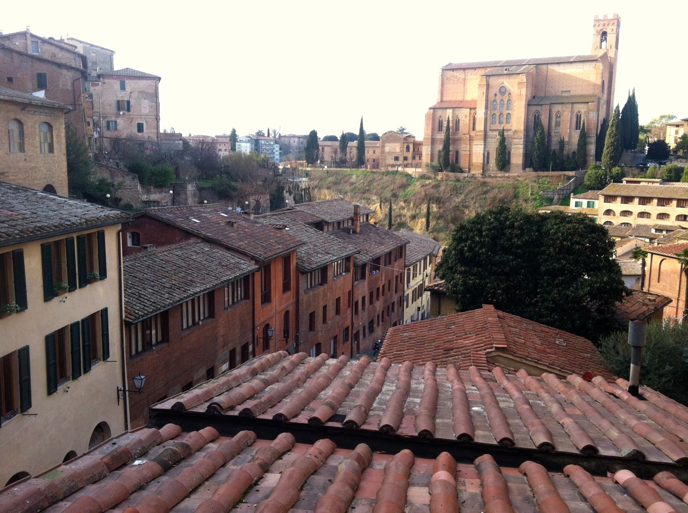
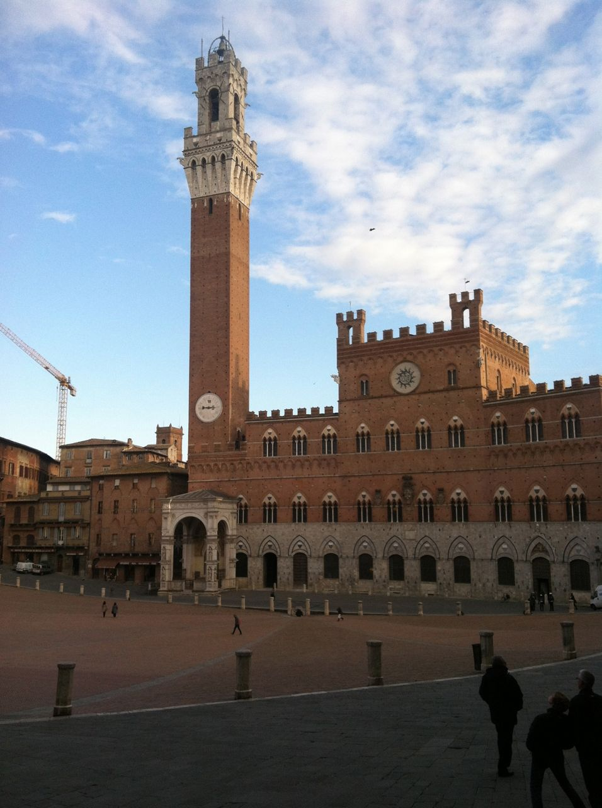
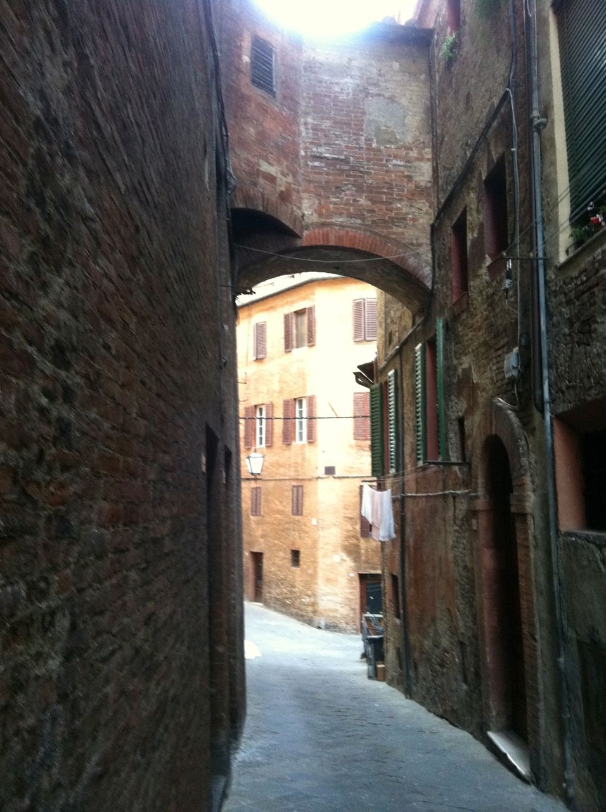
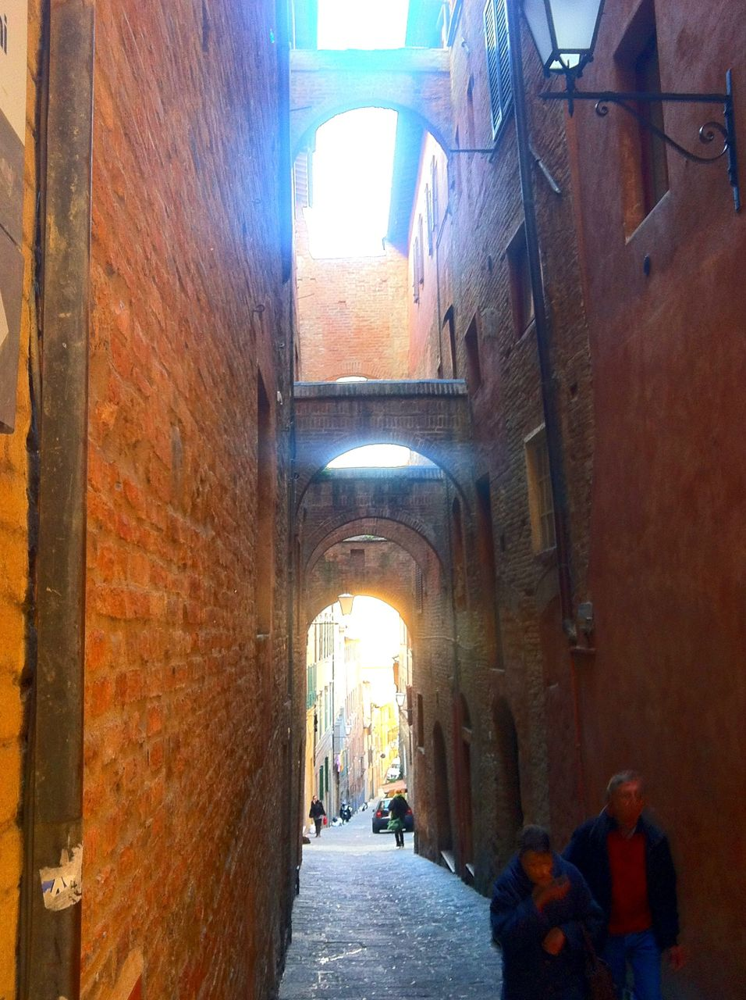

The course
Is there a common set of social institutions or environments that gives rise to both successful urban economies and flourishing arts and culture? Proposing that such a set exists, this course attempts to identify it; traces its implications for cultural and economic development; and explores the interrelations of capitalism, cities, and culture. Books: Richard LeGates and Frederic Stout (eds.), The City Reader, and Jane Jacobs, The Death and Life of Great American Cities.
- 1How cities arose, vanished and returned: from the polis to Engels's ManchesterThe Evolution of Cities
- 2Cities first, rural development laterReading: Jacobs, The Economy of Cities, ch. 1, “Cities First—Rural Development Later”Cities First--rural development later
- 3Urban planning modernism: Howard, Le Corbusier and WrightUrban Planning ModernismI Dreamed a Dream (a planner's lament)
- 4Hayek: knowledge, prices and spontaneous orderReading: Hayek, “The Use of Knowledge in Society”The Use of Knowledge in Society
- 5Jane Jacobs against urban rationalismJane Jacobs’s Critique of Urban Rationalism
- 6The Death and Life of Great American Cities, chapter by chapterReading: Jacobs, The Death and Life of Great American CitiesThe Illustrated Jane Jacobs
Lectures
Handouts
Quizzes
Siena: a city made for walking










Credit
Thanks to Sanford Ikeda for creating the overarching structure for this course.